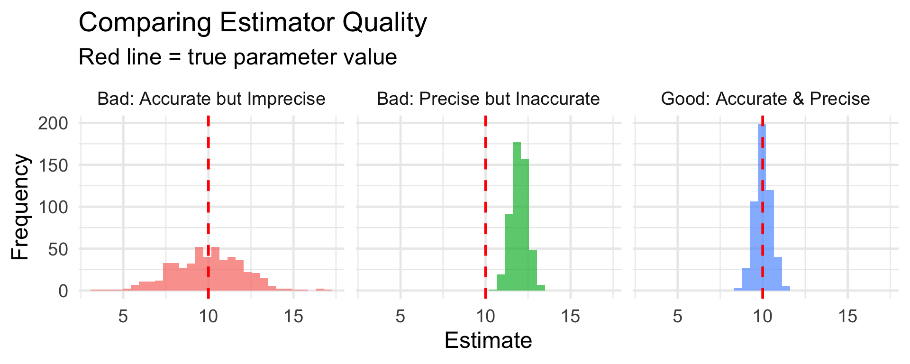
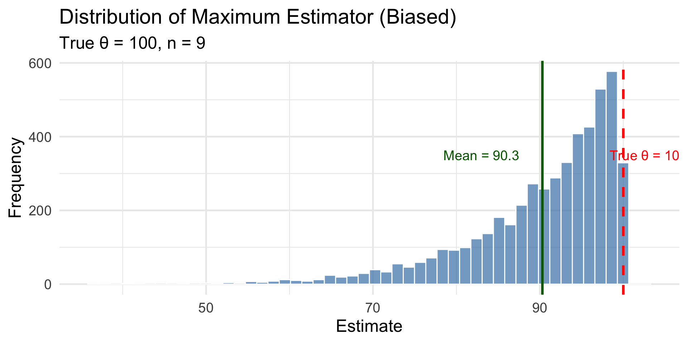
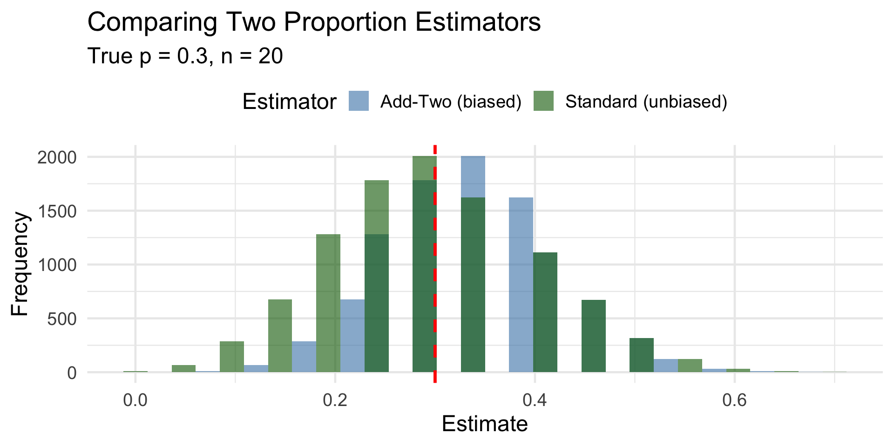
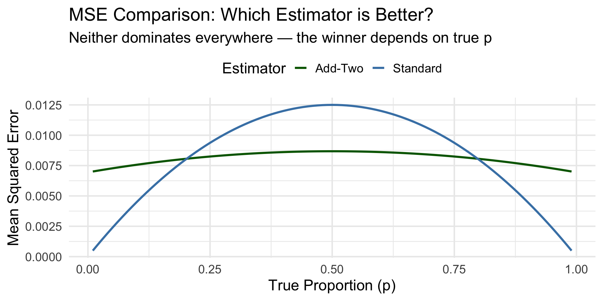

| Sample | Sample Mean (x̄) |
|---|---|
| 1 | 9.90 |
| 2 | 10.31 |
| 3 | 10.03 |
| 4 | 10.85 |
| 5 | 9.17 |
| 6 | 9.31 |
Lesson 2: Point Estimation; Bias, Variance, and MSE
BSTA 551: Statistical Inference
Lesson 2: Point Estimation
Review: Where We Left Off
Key concepts from Lesson 1:
- Population vs. sample; parameters vs. statistics
- Sampling distributions
- \(E(\bar{X}) = \mu\) and \(\text{Var}(\bar{X}) = \sigma^2/n\)
- Numerical optimization with
optimize()
. . .
Today’s Goals:
- Define point estimators formally
- Understand bias and how to calculate it
- Learn about standard error and precision
- Introduce Mean Squared Error (MSE)
- Explore the bias-variance tradeoff
Point Estimation: Core Concepts
What is a Point Estimator? (Devore 7.1)
Definitions
- A parameter is a fixed (but unknown) characteristic of a population (e.g., \(\mu\), \(\sigma\), \(p\))
- An estimator is a rule/formula for calculating an estimate from sample data
- An estimate is the actual number you calculate from a specific sample
. . .
Example:
| Concept | Symbol | Example |
|---|---|---|
| Parameter | \(\mu\) | True mean BP reduction |
| Estimator | \(\bar{X} = \frac{1}{n}\sum X_i\) | The formula “sample mean” |
| Estimate | \(\bar{x} = 11.2\) | The number from our data |
Key Distinction: Estimator vs. Estimate
Estimator: A random variable (before data is collected)
- \(\bar{X}\) is a function of random variables \(X_1, \ldots, X_n\)
- Has a sampling distribution
- Can calculate \(E(\bar{X})\), \(\text{Var}(\bar{X})\)
. . .
Estimate: A specific number (after data is collected)
- \(\bar{x} = 11.2\) is a specific value
- Just one realization from the sampling distribution
. . .
Tip
Think of it like this: the estimator is the recipe; the estimate is what you get when you cook it with specific ingredients.
The Sampling Distribution (Revisited)
Different samples give different estimates. The sampling distribution describes this variability.
. . .
Each sample gives a different estimate, but they cluster around the true value \(\mu = 10\).
What Makes a Good Estimator?
We want estimators that are:
- Accurate (unbiased): On average, hits the true value
- Precise (low variance): Estimates are clustered together
- Efficient: Best combination of accuracy and precision

Bias: Measuring Accuracy
Bias: Formal Definition
Definition
The bias of an estimator \(\hat{\theta}\) is: \[\text{Bias}(\hat{\theta}) = E(\hat{\theta}) - \theta\]
An estimator is unbiased if \(\text{Bias}(\hat{\theta}) = 0\), i.e., \(E(\hat{\theta}) = \theta\).
. . .
Interpretation:
- Bias measures systematic error
- Positive bias = tends to overestimate
- Negative bias = tends to underestimate
- Zero bias = correct on average
Worked Example: Proving Sample Mean is Unbiased
Claim: The sample mean \(\bar{X}\) is an unbiased estimator of \(\mu\).
Proof: We need to show \(E(\bar{X}) = \mu\).
. . .
\[\text{Bias}(\bar{X}) = E(\bar{X}) - \mu\]
. . .
We already showed that \(E(\bar{X}) = \mu\), so:
\[\text{Bias}(\bar{X}) = \mu - \mu = 0 \checkmark\]
. . .
Conclusion: The sample mean is unbiased for estimating the population mean.
Worked Example: Sample Proportion
Setup: In a vaccine trial, \(X\) patients out of \(n\) develop immunity. The estimator is \(\hat{p} = X/n\).
Claim: \(\hat{p}\) is unbiased for the true immunity rate \(p\).
. . .
Proof: Since \(X \sim \text{Binomial}(n, p)\), we know \(E(X) = np\).
\[E(\hat{p}) = E\left(\frac{X}{n}\right) = \frac{1}{n} E(X) = \frac{1}{n} \cdot np = p\]
. . .
\[\text{Bias}(\hat{p}) = E(\hat{p}) - p = p - p = 0 \checkmark\]
Concrete Calculation: Bias of Sample Proportion
Data: In a study of 80 patients, 52 showed improvement.
n <- 80
x <- 52
p_hat <- x / n
cat("Sample proportion:", p_hat, "\n")Sample proportion: 0.65 cat("If true p = 0.65, what is the bias of this single estimate?\n")If true p = 0.65, what is the bias of this single estimate?cat("Observed - True =", p_hat - 0.65)Observed - True = 0. . .
Important distinction:
- A single estimate can be above or below the true value
- Bias refers to the average behavior across many samples
- An unbiased estimator still gives wrong answers for individual samples!
Simulation: Verifying Unbiasedness
# Verify that sample proportion is unbiased
true_p <- 0.65
n_patients <- 80
n_simulations <- 10000
proportion_simulation <- tibble(sim = 1:n_simulations) |>
mutate(
successes = rbinom(n_simulations, size = n_patients, prob = true_p),
p_hat = successes / n_patients
)
proportion_simulation |>
summarize(
true_p = true_p,
mean_of_estimates = mean(p_hat),
empirical_bias = mean(p_hat) - true_p
)# A tibble: 1 × 3
true_p mean_of_estimates empirical_bias
<dbl> <dbl> <dbl>
1 0.65 0.650 -0.000182The bias is essentially zero (just simulation noise)!
A Biased Estimator: The Maximum
Problem: Estimate the upper bound \(\theta\) of a Uniform[0, \(\theta\)] distribution.
Natural idea: Use the largest observation: \(\hat{\theta} = \max(X_1, \ldots, X_n)\)
. . .
Think about it: Can this estimator ever overestimate \(\theta\)?
. . .
No! The sample maximum is always ≤ the population maximum.
This means the estimator is biased low.
Calculating the Bias Mathematically
For \(X_1, \ldots, X_n \sim \text{Uniform}[0, \theta]\), it can be shown that:
\[E(\max(X_1, \ldots, X_n)) = \frac{n}{n+1} \theta\]
. . .
Bias calculation:
\[\text{Bias} = E(\hat{\theta}) - \theta = \frac{n}{n+1}\theta - \theta = -\frac{\theta}{n+1}\]
. . .
Example: If \(\theta = 10\) and \(n = 5\):
\[\text{Bias} = -\frac{10}{6} = -1.67\]
The estimator underestimates by about 1.67 on average.
Your Turn: Calculate Bias
Exercise: A lab instrument has a maximum detection limit \(\theta\). We take \(n = 9\) measurements from Uniform[0, \(\theta\)] and use the maximum as our estimate.
- If \(\theta = 100\), what is \(E(\hat{\theta})\)?
- What is the bias?
- By what percentage does this estimator underestimate on average?
. . .
Solution:
- \(E(\hat{\theta}) = \frac{9}{10} \times 100 = 90\)
- \(\text{Bias} = 90 - 100 = -10\)
- Underestimates by \(\frac{10}{100} = 10\%\)
Simulation: Visualizing the Biased Estimator
true_theta <- 100
n <- 9
n_sims <- 5000
max_simulation <- tibble(sim = 1:n_sims) |>
mutate(
max_estimate = map_dbl(sim, \(s) max(runif(n, 0, true_theta)))
)
# Calculate empirical bias
max_simulation |>
summarize(
theoretical_E = n / (n + 1) * true_theta,
empirical_mean = mean(max_estimate),
theoretical_bias = -true_theta / (n + 1),
empirical_bias = mean(max_estimate) - true_theta
)# A tibble: 1 × 4
theoretical_E empirical_mean theoretical_bias empirical_bias
<dbl> <dbl> <dbl> <dbl>
1 90 90.3 -10 -9.70Visualizing the Biased Estimator

Correcting the Bias
Idea: Multiply by a correction factor to “un-bias” the estimator.
Since \(E(\max) = \frac{n}{n+1}\theta\), we can define:
\[\hat{\theta}_{\text{unbiased}} = \frac{n+1}{n} \cdot \max(X_1, \ldots, X_n)\]
. . .
Check:
\[E(\hat{\theta}_{\text{unbiased}}) = \frac{n+1}{n} \cdot E(\max) = \frac{n+1}{n} \cdot \frac{n}{n+1}\theta = \theta \checkmark\]
Your Turn: Apply the Correction
Exercise: Using the lab instrument example with \(n = 9\) and \(\theta = 100\):
- If you observe \(\max = 92\), what is the biased estimate?
- What is the unbiased estimate?
. . .
Solution:
- Biased estimate: \(\hat{\theta}_b = 92\)
- Unbiased estimate: \(\hat{\theta}_u = \frac{10}{9} \times 92 = 102.2\)
observed_max <- 92
n <- 9
biased_est <- observed_max
unbiased_est <- (n + 1) / n * observed_max
cat("Biased estimate:", biased_est, "\n")Biased estimate: 92 cat("Unbiased estimate:", round(unbiased_est, 1))Unbiased estimate: 102.2Standard Error: Measuring Precision
Standard Error: Definition
Definition
The standard error of an estimator is its standard deviation: \[SE(\hat{\theta}) = \sqrt{\text{Var}(\hat{\theta})}\]
. . .
Key Standard Errors:
| Estimator | Standard Error |
|---|---|
| Sample mean \(\bar{X}\) | \(\frac{\sigma}{\sqrt{n}}\) |
| Sample proportion \(\hat{p}\) | \(\sqrt{\frac{p(1-p)}{n}}\) |
Worked Example: Standard Error of Sample Mean
Problem: In a blood pressure study, the population SD is \(\sigma = 15\) mmHg. Calculate the standard error of \(\bar{X}\) for sample sizes \(n = 25\) and \(n = 100\).
. . .
Solution:
For \(n = 25\): \[SE(\bar{X}) = \frac{15}{\sqrt{25}} = \frac{15}{5} = 3 \text{ mmHg}\]
For \(n = 100\): \[SE(\bar{X}) = \frac{15}{\sqrt{100}} = \frac{15}{10} = 1.5 \text{ mmHg}\]
. . .
Interpretation: With 100 patients, our estimate is twice as precise as with 25 patients.
Your Turn: Calculate Standard Error
Exercise: A survey measures patient satisfaction on a 0-100 scale. The population standard deviation is \(\sigma = 20\).
- What is the SE of \(\bar{X}\) for \(n = 16\) patients?
- What sample size is needed to achieve \(SE = 2\)?
. . .
Solutions:
\(SE = \frac{20}{\sqrt{16}} = \frac{20}{4} = 5\)
We need \(\frac{20}{\sqrt{n}} = 2\), so \(\sqrt{n} = 10\), thus \(n = 100\)
sigma <- 20
# Problem 1
se_n16 <- sigma / sqrt(16)
# Problem 2
n_needed <- (sigma / 2)^2
cat("SE for n=16:", se_n16, "\nSample size for SE=2:", n_needed)SE for n=16: 5
Sample size for SE=2: 100The Problem with Unknown Parameters
Issue: Standard errors often involve unknown parameters!
- SE of \(\bar{X}\) requires knowing \(\sigma\)
- SE of \(\hat{p}\) requires knowing \(p\)
. . .
Solution: Estimated standard error — substitute estimates for unknown parameters
\[\widehat{SE}(\bar{X}) = \frac{s}{\sqrt{n}}\]
\[\widehat{SE}(\hat{p}) = \sqrt{\frac{\hat{p}(1-\hat{p})}{n}}\]
Example: Estimated Standard Error
# Blood pressure data from 25 patients
bp_reductions <- c(12, 8, 15, 10, 7, 14, 11, 9, 13, 16,
8, 12, 10, 14, 11, 9, 15, 13, 7, 12,
10, 8, 14, 11, 13)
n <- length(bp_reductions)
x_bar <- mean(bp_reductions)
s <- sd(bp_reductions)
# Estimated standard error
se_estimated <- s / sqrt(n)
tibble(
Statistic = c("Sample Mean", "Sample SD", "Sample Size", "Estimated SE"),
Value = c(x_bar, round(s, 2), n, round(se_estimated, 2))
)# A tibble: 4 × 2
Statistic Value
<chr> <dbl>
1 Sample Mean 11.3
2 Sample SD 2.64
3 Sample Size 25
4 Estimated SE 0.53Mean Squared Error
Mean Squared Error: Combining Bias and Variance
What if we have to choose between a biased estimator with low variance and an unbiased estimator with high variance?
. . .
Definition: Mean Squared Error
\[\text{MSE}(\hat{\theta}) = E[(\hat{\theta} - \theta)^2]\]
Key Formula: \[\text{MSE} = \text{Variance} + \text{Bias}^2\]
. . .
MSE captures total error — both systematic (bias) and random (variance).
Proving the MSE Formula
\[\text{MSE}(\hat{\theta}) = E[(\hat{\theta} - \theta)^2]\]
. . .
Add and subtract \(E(\hat{\theta})\):
\[= E[(\hat{\theta} - E(\hat{\theta}) + E(\hat{\theta}) - \theta)^2]\]
. . .
Expand the square:
\[= E[(\hat{\theta} - E(\hat{\theta}))^2] + 2E[(\hat{\theta} - E(\hat{\theta}))](E(\hat{\theta}) - \theta) + (E(\hat{\theta}) - \theta)^2\]
. . .
The middle term equals zero because \(E[\hat{\theta} - E(\hat{\theta})] = 0\):
\[= \text{Var}(\hat{\theta}) + [\text{Bias}(\hat{\theta})]^2\]
Worked Example: Computing MSE
Setup: Estimating \(\theta\) from Uniform[0, \(\theta\)] with \(n = 9\) and \(\theta = 100\).
Biased estimator: \(\hat{\theta}_b = \max(X_i)\)
From theory:
- \(E(\hat{\theta}_b) = \frac{9}{10}(100) = 90\)
- \(\text{Var}(\hat{\theta}_b) = \frac{n \theta^2}{(n+1)^2(n+2)} = \frac{9 \times 100^2}{100 \times 11} = 81.82\)
. . .
\[\text{Bias} = 90 - 100 = -10\] \[\text{MSE} = 81.82 + (-10)^2 = 81.82 + 100 = 181.82\]
Your Turn: Calculate MSE
Exercise: For the unbiased estimator \(\hat{\theta}_u = \frac{n+1}{n}\max(X_i)\) with \(n = 9\) and \(\theta = 100\):
- What is the bias?
- If \(\text{Var}(\hat{\theta}_u) = 101.01\), what is the MSE?
- Which estimator has lower MSE: biased or unbiased?
. . .
Solutions:
- Bias = 0 (it’s unbiased!)
- \(\text{MSE} = 101.01 + 0^2 = 101.01\)
- Unbiased has lower MSE (101.01 < 181.82)
But this isn’t always the case!
The Bias-Variance Tradeoff
The Bias-Variance Tradeoff
Sometimes a biased estimator has lower MSE than an unbiased one!
. . .
Example: Estimating a proportion \(p\) with \(n = 20\) observations
Estimator 1: Standard: \(\hat{p}_1 = \frac{X}{n}\) (unbiased)
Estimator 2: “Add-two”: \(\hat{p}_2 = \frac{X + 2}{n + 4}\) (biased toward 0.5)
Comparing Proportion Estimators: Theory
For \(\hat{p}_1 = X/n\) (standard):
- Bias = 0
- Variance = \(\frac{p(1-p)}{n}\)
- MSE = \(\frac{p(1-p)}{n}\)
. . .
For \(\hat{p}_2 = \frac{X+2}{n+4}\) (add-two):
- Bias = \(\frac{2 - 4p}{n+4}\)
- Variance = \(\frac{np(1-p)}{(n+4)^2}\)
- MSE = Variance + Bias²
Your Turn: Calculate Bias of Add-Two Estimator
Exercise: For \(n = 20\) and \(p = 0.3\):
- Calculate the bias of \(\hat{p}_2 = \frac{X+2}{n+4}\)
Hint: \(E(X) = np\) for binomial, so \(E(\hat{p}_2) = \frac{np + 2}{n + 4}\)
. . .
Solution:
\[E(\hat{p}_2) = \frac{20(0.3) + 2}{24} = \frac{8}{24} = 0.333\]
\[\text{Bias} = 0.333 - 0.3 = 0.033\]
The add-two estimator is biased toward 0.5 (and 0.333 is closer to 0.5 than 0.3 is).
Simulation: Comparing the Estimators
true_p <- 0.3
n <- 20
n_sims <- 10000
# Simulate both estimators
comparison_sim <- tibble(sim = 1:n_sims) |>
mutate(
x = rbinom(n_sims, size = n, prob = true_p),
p_hat_standard = x / n,
p_hat_addtwo = (x + 2) / (n + 4)
)
# Compare MSE
comparison_sim |>
summarize(
`Standard Bias` = mean(p_hat_standard) - true_p,
`Add-Two Bias` = mean(p_hat_addtwo) - true_p,
`Standard Variance` = var(p_hat_standard),
`Add-Two Variance` = var(p_hat_addtwo),
`Standard MSE` = mean((p_hat_standard - true_p)^2),
`Add-Two MSE` = mean((p_hat_addtwo - true_p)^2)
) |>
pivot_longer(everything(), names_to = "Metric", values_to = "Value") |>
mutate(Value = round(Value, 5))# A tibble: 6 × 2
Metric Value
<chr> <dbl>
1 Standard Bias 0.00049
2 Add-Two Bias 0.0337
3 Standard Variance 0.0104
4 Add-Two Variance 0.00722
5 Standard MSE 0.0104
6 Add-Two MSE 0.00835Visualizing the Tradeoff

MSE Comparison Across Different True Values

Key Insight: The “best” estimator depends on the true parameter value!
Medical Application: Disease Prevalence
Scenario: Estimating prevalence of a rare disease (\(p \approx 0.05\)) vs. a common condition (\(p \approx 0.5\)).
# Compare MSE at different prevalence levels
n <- 50
mse_at_p <- function(p, n) {
mse_std <- p * (1-p) / n
bias_add2 <- (2 - 4*p) / (n + 4)
var_add2 <- n * p * (1-p) / (n + 4)^2
mse_add2 <- var_add2 + bias_add2^2
tibble(p = p, MSE_Standard = mse_std, MSE_AddTwo = mse_add2,
Better = ifelse(mse_std < mse_add2, "Standard", "Add-Two"))
}
bind_rows(
mse_at_p(0.05, n),
mse_at_p(0.50, n)
) |>
mutate(across(where(is.numeric), \(x) round(x, 5)))# A tibble: 2 × 4
p MSE_Standard MSE_AddTwo Better
<dbl> <dbl> <dbl> <chr>
1 0.05 0.00095 0.00193 Standard
2 0.5 0.005 0.00429 Add-Two Sample Variance: Why n-1?
Two formulas for sample variance:
\[S^2 = \frac{\sum(X_i - \bar{X})^2}{n-1} \quad \text{vs.} \quad \tilde{S}^2 = \frac{\sum(X_i - \bar{X})^2}{n}\]
. . .
Question: Why do we divide by \(n-1\) instead of \(n\)?
Answer: Dividing by \(n\) gives a biased estimator!
Simulation: Comparing Variance Estimators
true_variance <- 100 # σ² = 100
n <- 10
n_sims <- 10000
variance_sim <- tibble(sim = 1:n_sims) |>
mutate(
sample_data = map(sim, \(s) rnorm(n, 0, sqrt(true_variance))),
s2_n_minus_1 = map_dbl(sample_data, var),
s2_n = map_dbl(sample_data, \(x) sum((x - mean(x))^2) / n)
)
variance_sim |>
summarize(
`True σ²` = true_variance,
`E[S² with n-1]` = mean(s2_n_minus_1),
`E[S² with n]` = mean(s2_n),
`Bias (n-1)` = mean(s2_n_minus_1) - true_variance,
`Bias (n)` = mean(s2_n) - true_variance
) |>
mutate(across(where(is.numeric), \(x) round(x, 2)))# A tibble: 1 × 5
`True σ²` `E[S² with n-1]` `E[S² with n]` `Bias (n-1)` `Bias (n)`
<dbl> <dbl> <dbl> <dbl> <dbl>
1 100 100. 90.1 0.15 -9.86Your Turn: Comprehensive Example
Exercise: A clinical trial measures cholesterol reduction. Based on \(n = 36\) patients:
- Sample mean: \(\bar{x} = 25\) mg/dL
- Sample SD: \(s = 12\) mg/dL
Calculate:
- The estimated standard error of \(\bar{X}\)
- If the true mean reduction is \(\mu = 24\), and we repeated this trial many times, what would be the expected MSE of \(\bar{X}\)?
. . .
Solutions:
\(\widehat{SE} = \frac{12}{\sqrt{36}} = 2\) mg/dL
\(\bar{X}\) is unbiased, so \(\text{MSE} = \text{Var}(\bar{X}) = \frac{\sigma^2}{n} \approx \frac{144}{36} = 4\)
Summary and Looking Ahead
Putting It All Together: Estimator Summary
| Property | Formula | Interpretation |
|---|---|---|
| Bias | \(E(\hat{\theta}) - \theta\) | Systematic error |
| Variance | \(E[(\hat{\theta} - E(\hat{\theta}))^2]\) | Random variability |
| Std Error | \(\sqrt{\text{Var}(\hat{\theta})}\) | Typical deviation |
| MSE | \(\text{Var} + \text{Bias}^2\) | Total error |
. . .
Guidelines for Choosing Estimators
- Unbiasedness is desirable but not always essential
- Lower variance/SE means more precision
- MSE provides a single criterion combining both
- Sometimes biased estimators have lower MSE!
Lesson 2 Summary
Key Concepts:
- Point Estimators: Rules for calculating estimates from data
- Estimator = random variable; estimate = specific value
- Bias: \(\text{Bias}(\hat{\theta}) = E(\hat{\theta}) - \theta\)
- Unbiased if \(E(\hat{\theta}) = \theta\)
- Can sometimes correct biased estimators
- Standard Error: \(SE(\hat{\theta}) = \sqrt{\text{Var}(\hat{\theta})}\)
- Measures precision of the estimator
- Mean Squared Error: \(\text{MSE} = \text{Var} + \text{Bias}^2\)
- Captures total estimation error
- Bias-variance tradeoff: sometimes biased is better!
Lesson 2 Practice Problems
For a Uniform[0, \(\theta\)] distribution with \(n = 20\) observations and \(\theta = 50\), calculate:
- The expected value of the maximum
- The bias of using the maximum as an estimator
- The corrected unbiased estimator
Using simulation, compare the MSE of the standard proportion estimator vs. the add-two estimator for \(n = 10\) and \(p = 0.1, 0.3, 0.5\).
For a sample of size \(n\) from Exponential(\(\lambda\)), the MLE is \(\hat{\lambda} = 1/\bar{X}\). It can be shown that \(E(\hat{\lambda}) = \frac{n}{n-1}\lambda\). Calculate the bias and propose an unbiased estimator.
Next Week Preview
Week 2: Minimum Variance Unbiased Estimators
- Among all unbiased estimators, which has smallest variance?
- The Cramér-Rao lower bound
- Efficiency of estimators
- Introduction to Maximum Likelihood Estimation
References
- Devore, Berk, and Carlton. Modern Mathematical Statistics with Applications (Springer). Chapter 7.1
- Chihara and Hesterberg. Mathematical Statistics with Resampling and R (Wiley). Chapter 6.
Questions?
Thank you!